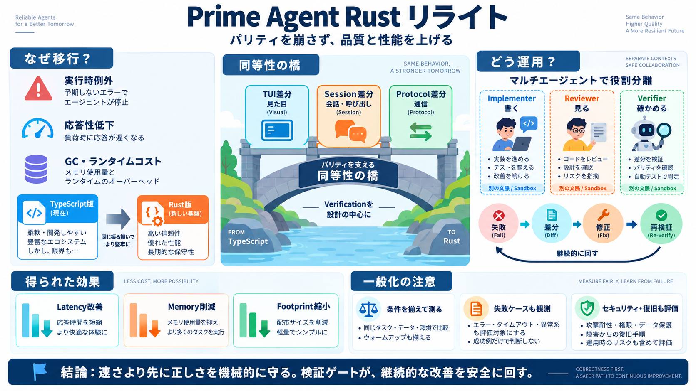

Prime Agent: A Self-Improving Coding Harness Where Everything Is Python - Developers Digest
Prime Agent Blog Post - official launch announcement, benchmarks, and architecture (August 5, 2026). Sections cited: RLM…

Prime Agent Blog Post - official launch announcement, benchmarks, and architecture (August 5, 2026). Sections cited: RLM…
Prime Agent improves ARC-AGI-3 performance from 30% to 95%, matches or exceeds Pi, Claude Code, and Codex (and outperfor…
Creating emulators from scratch. An emulator is software that reproduces another computer system's observable behavior. …
[1:40:31] RL environments that will be presented at col 2026 this October. Um and in that paper I set up a feedback loop…
KV-aware router balancing cached prefix overlap against queued work with a Mooncake host-DRAM cache tier The router bal…